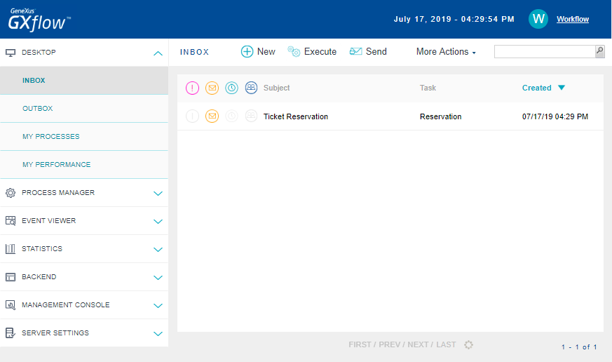

GXflow Client consists of a group of applications aimed at workflow system end users. Some examples of the operations a typical system user can execute in GXflow client are: visualizing and executing his pending tasks, starting new processes (provided he has the corresponding rights) and query historical information as regards the processes he has taken part in. GXflow client also includes applications aimed at users with administrator profile. Some examples of the operations this type of user can execute are: querying information about processes and tasks, suspending or quitting processes, assigning tasks to users manually, creating new users and assigning or removing user roles. 
The form shown in the previous figure is made up by the following fields: • User (required): ID of the user that is signing in to the system. Once the user types his data, he must press the button to log into GXFlow client. If the user or password typed are wrong, the "Incorrect user or password" message will be displayed and the user will be asked to type the data again. To see more about possible errors at the sign in clic here. Additionally, if the user does not remember his password, he can click on the Forgot your password? link, and the following dialog will be displayed: In this dialog, the user must type the e-mail address specified in his personal data. Then, by pressing the "Confirm" button, if the address typed corresponds to a system user, a message containing the corresponding user password will be sent to this address. To be able to use this feature, the user must have an e-mail account setup among his personal data. Once you executed the application in prototyping mode or after sign in you will see the following application: GXflow Client General Structure
|